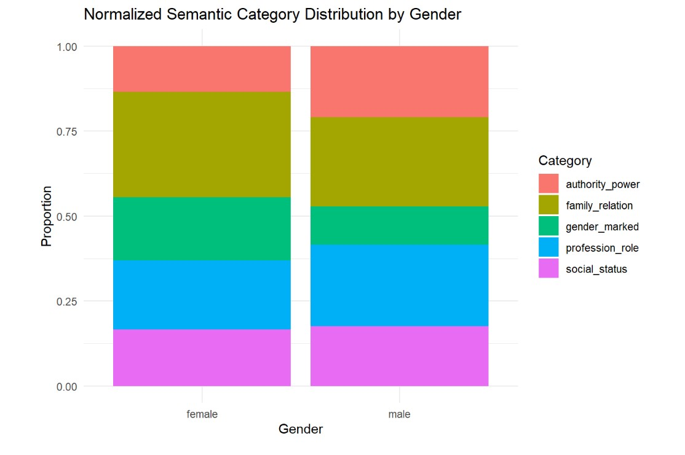

Overview
This project examines whether masculine and feminine terms are represented differently within Open English WordNet RDF, both structurally and semantically.
Research Question
Do masculine terms exhibit greater semantic richness than feminine terms, and do the concepts associated with each gender differ systematically?
Methods
- Manual selection of gendered term pairs
- Mapping of each term to a specific WordNet synset
- SPARQL queries over WordNet RDF
- Extraction of hypernyms, hyponyms and total relations
- Semantic category assignment using GloVe embeddings
- Manual validation of ambiguous classifications
Main Findings
Masculine terms tend to be more connected and more hierarchically developed in the network. Feminine terms are more often associated with family-related and explicitly gender-marked categories, while masculine terms show stronger links to authority and professional roles.
Tools
Python · RDF · SPARQL · R · GloVe · semantic analysis · WordNet